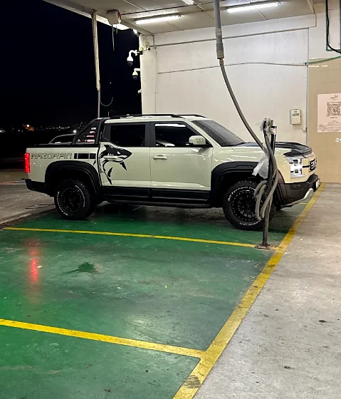
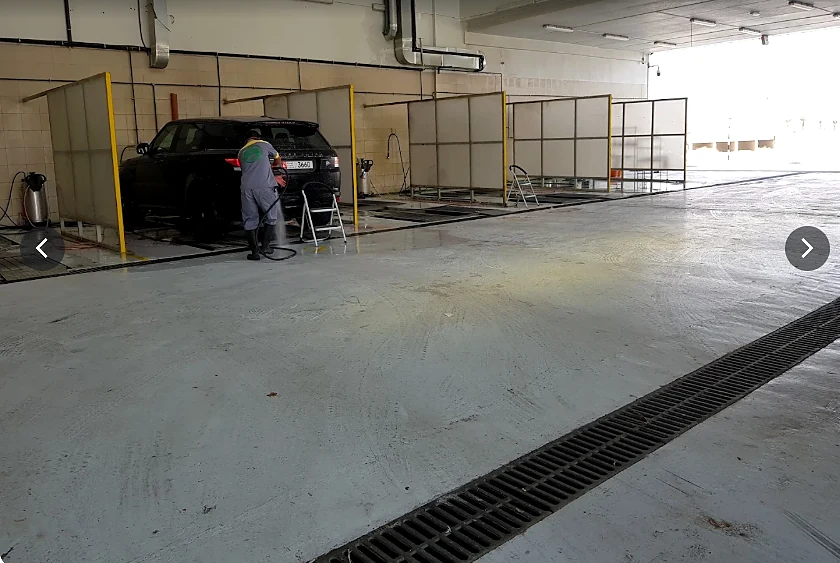
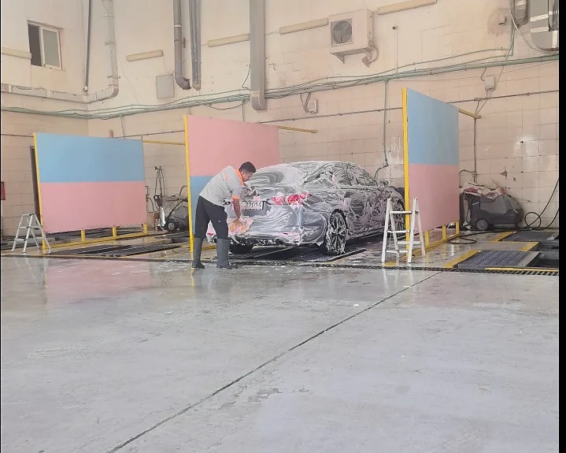
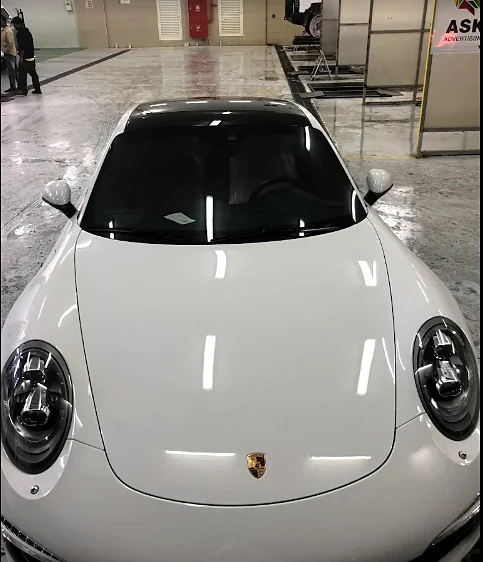
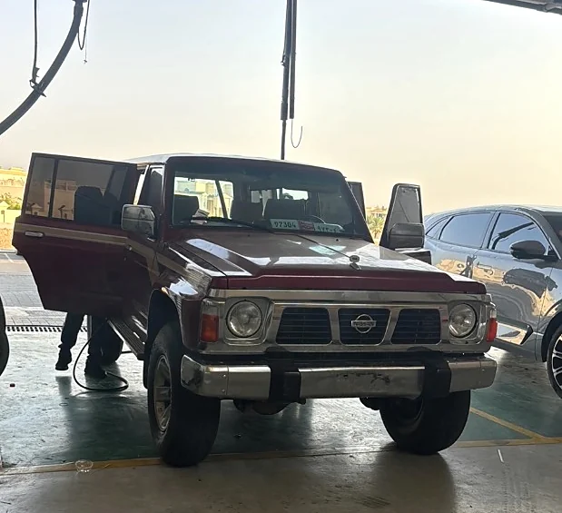
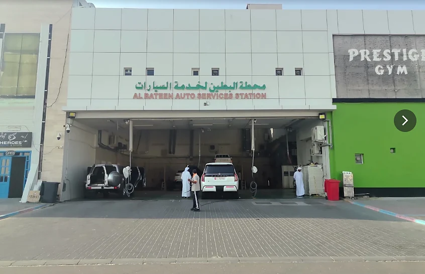
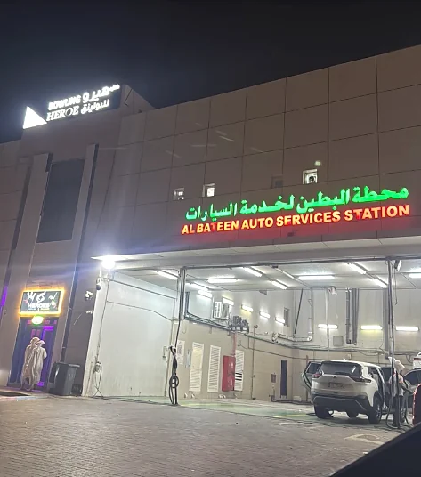

01تجهيز بالهواء
نبدأ بمرحلة الهواء لتجهيز السيارة قبل الغسيل.

غسيل يدوي على أربع مراحل، بعناية حقيقية من البداية حتى اللمسة الأخيرة.
عملية واضحة ومدروسة من تجهيز السيارة بالهواء إلى التجفيف واللمسة النهائية.

01نبدأ بمرحلة الهواء لتجهيز السيارة قبل الغسيل.

02غسيل يدوي بصابون يحتوي على الشمع للمساعدة على اللمعة والحماية.

03مسح دقيق وإنهاء مرتب بعد الغسيل لإظهار النظافة واللمعة.

04تجفيف السيارة وإنهاؤها بمنتج يساعد على تحسين اللمعة النهائية.
اختر الخدمة المناسبة لسيارتك، واسأل الفريق عن التفاصيل المتاحة عند زيارتك.
اسألنا على واتساببعد الغسيل، تجد في المحطة مجموعة من خدمات الصيانة السريعة والعناية بالسيارة.


محطة البطين لخدمات السيارات — العين، أبوظبي. نعمل يومياً من 9 صباحاً حتى 11 مساءً.